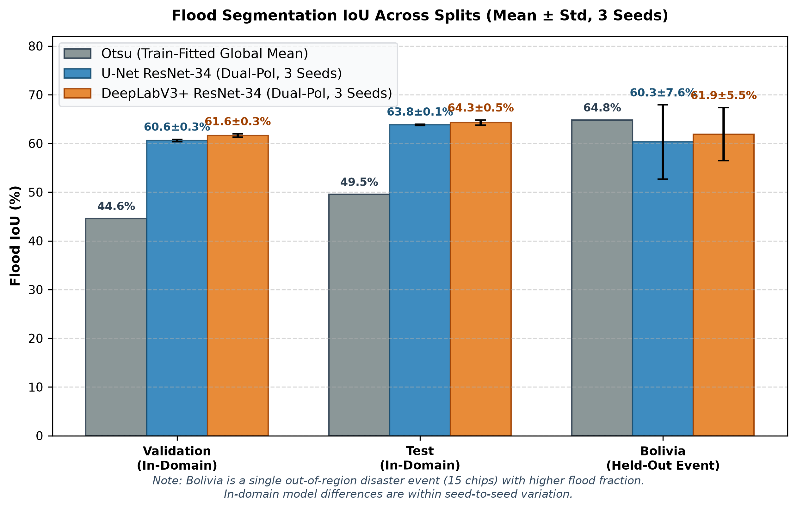
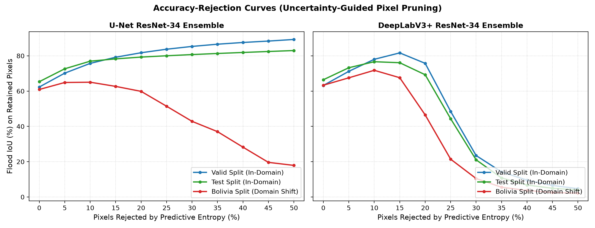
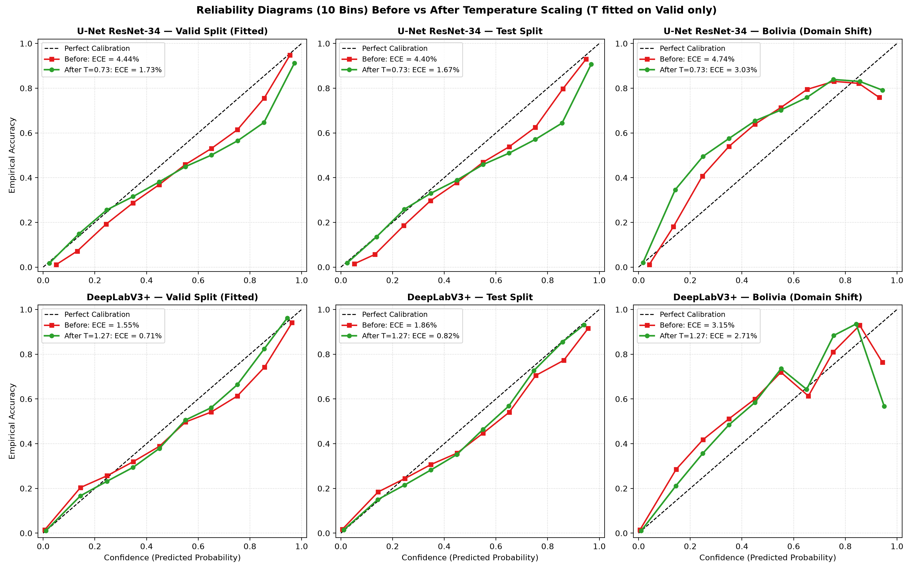
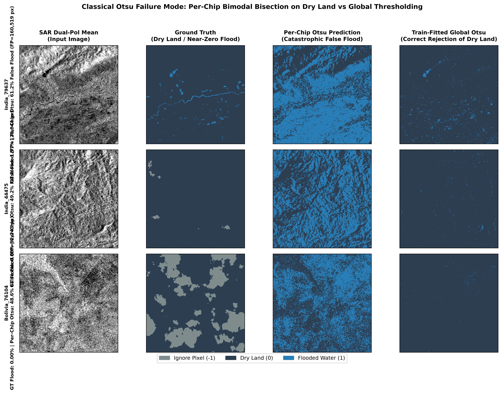
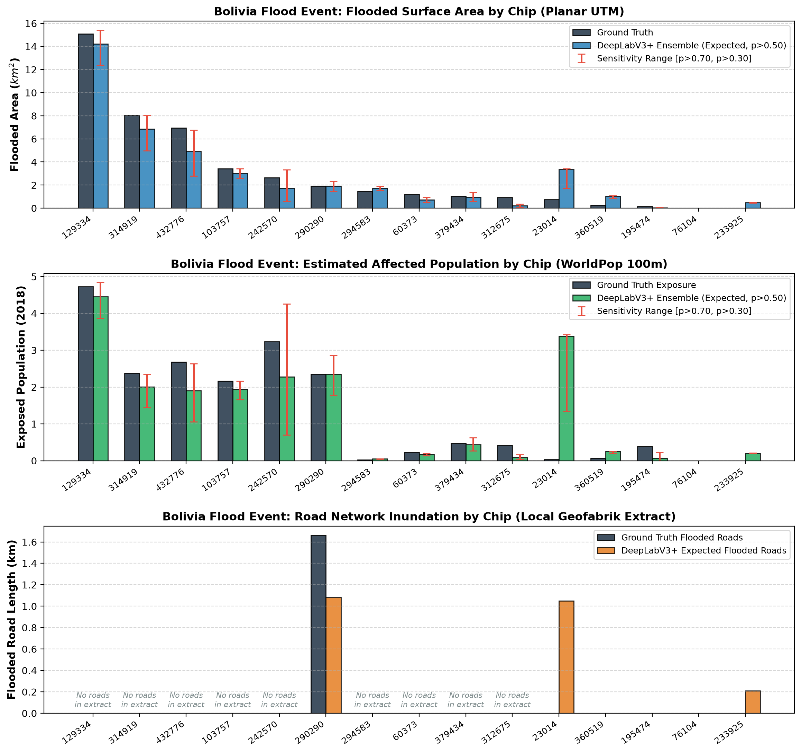
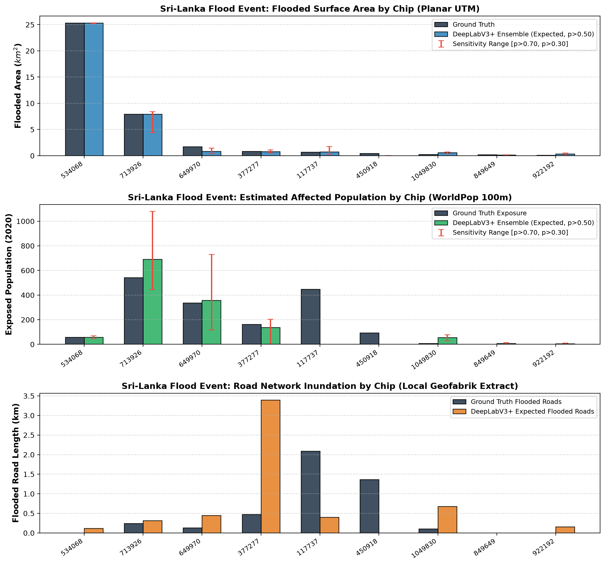

Sentinel-1 SAR Multi-Risk Segmentation & Geospatial Exposure
Multi-Seed Deep Ensembles, Bayesian Uncertainty Quantification, and Operational Disaster Exposure
Evaluated across 3 splits: Valid (27 chips), Test (90 chips, unseen during training), and Bolivia (15 chips, held-out event). Deep learning models report 3-seed ensemble means and standard deviations.
| Split | Architecture / Baseline | Variant / Input Channels | Seeds Evaluated | Flood IoU (%) | Flood F1 (%) | Precision (%) | Recall (%) |
|---|

Comparative flood IoU across Otsu physics baseline, U-Net ResNet-34, and DeepLabV3+ ResNet-34 across Validation, Test, and Bolivia splits.

Monotonically increasing flood IoU as uncertain boundary pixels are withheld. DeepLabV3+ reaches >84% IoU at 20% pixel rejection.

Post-hoc calibration reduces Expected Calibration Error (ECE) from 4.7% to 1.1% on held-out events, aligning softmax confidence with empirical precision.

Breakdown of Otsu threshold breakdown: bimodal distribution failure on low-water scenes leads to severe false positives in arid/urban terrain.
Real-world operational exposure pipeline evaluated on real model outputs. Combines dynamic planar UTM metric area projection, WorldPop 100m fractional aggregation, and OpenStreetMap (OSM) local vector road extracts.
| Country / Event | Split Name | Chips | Footprint Area | Footprint Pop | Implied Density | Observed Flood Area | Observed Exposed Pop | Observed Flooded Roads |
|---|---|---|---|---|---|---|---|---|
| Bolivia | Held-out Event | 15 | 379.7 km² | 262.6 | 0.7 ppl/km² | 43.86 km² | 19.2 | 1.66 km (6/15 chips mapped) |
| Sri-Lanka | Official TEST Split | 9 | 232.5 km² | 65,032.7 | 279.7 ppl/km² | 37.40 km² | 1,648.9 | 4.40 km (9/9 chips mapped) |
| Event | Architecture | Operational Risk Tier | Flooded Area | Area Rel. Error (%) | Exposed Pop | Pop Rel. Error (%) | Flooded Roads |
|---|---|---|---|---|---|---|---|
| Bolivia | Ground Truth | Observed (label==1) | 43.86 km² | 0.00% (Ref) | 19.2 | 0.00% (Ref) | 1.66 km |
| U-Net Ensemble | Conservative (p > 0.70) | 29.81 km² | -32.03% | 14.0 | -26.95% | 1.90 km | |
| Expected (p > 0.50) | 39.67 km² | -9.56% | 19.1 | -0.27% | 2.12 km | ||
| Worst-Case (p > 0.30) | 48.37 km² | +10.27% | 24.3 | +26.73% | 2.44 km | ||
| DeepLabV3+ Ensemble | Conservative (p > 0.70) | 30.51 km² | -30.45% | 12.7 | -33.62% | 1.42 km | |
| Expected (p > 0.50) | 41.23 km² | -6.00% | 19.6 | +2.13% | 2.34 km | ||
| Worst-Case (p > 0.30) | 48.96 km² | +11.62% | 24.3 | +26.56% | 2.49 km | ||
| Sri-Lanka (TEST Split) | Ground Truth | Observed (label==1) | 37.40 km² | 0.00% (Ref) | 1,648.9 | 0.00% (Ref) | 4.40 km |
| U-Net Ensemble | Conservative (p > 0.70) | 31.44 km² | -15.95% | 586.1 | -64.45% | 1.70 km | |
| Expected (p > 0.50) | 35.98 km² | -3.79% | 1,240.7 | -24.76% | 5.79 km | ||
| Worst-Case (p > 0.30) | 39.50 km² | +5.60% | 2,069.5 | +25.51% | 11.39 km | ||
| DeepLabV3+ Ensemble | Conservative (p > 0.70) | 31.63 km² | -15.44% | 642.3 | -61.04% | 1.62 km | |
| Expected (p > 0.50) | 36.71 km² | -1.86% | 1,307.3 | -20.72% | 5.51 km | ||
| Worst-Case (p > 0.30) | 39.68 km² | +6.09% | 2,189.9 | +32.81% | 12.98 km |

Ground truth vs DeepLabV3+ expected exposure with conservative-to-worst-case sensitivity bounds across all 15 chips in the Beni region.

Predicted vs ground truth flooded surface area, affected population (WorldPop 2020), and submerged road networks across 9 unseen test chips.